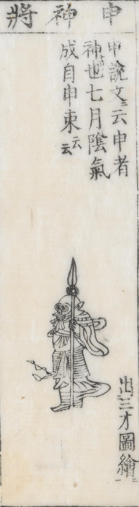

← 图鉴索引

十二神将の申（さる）が甲冑を付けて武器を持つ、獣面人身の姿で描かれている。顔は猿である。
出典：親書誌：U426_nichibunken_0429：簠簋内傳諺解大全／日付：2016／資源識別子：U426_nichibunken_0429_0014_0000
Copyright (c)2010- International Research Center for Japanese Studies, Kyoto, Japan. All rights reserved.